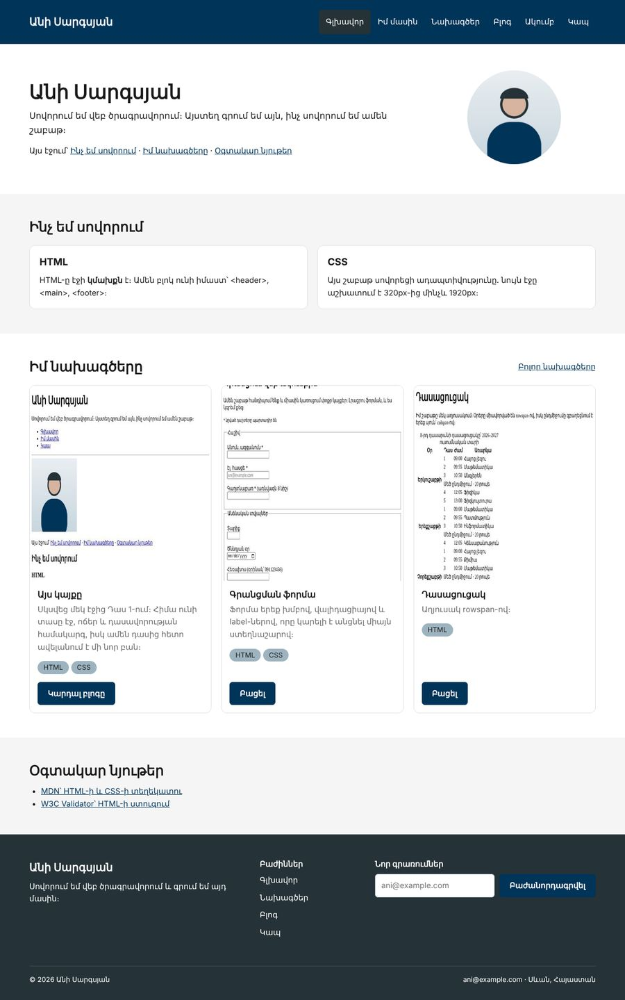
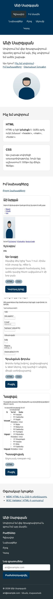

Տնային աշխատանք · HTML Դաս 14 · մինի-նախագիծ
Կայքը դառնում է ադապտիվ 320px-ից մինչև 1920px․ ադապտիվ սյուներ, media query-ներ, clamp() և ստուգում իրական հեռախոսում։
Օգտագործիր միայն Դաս 01–14-ը։ Հեռախոսում մենյուն պարզապես փաթաթվում է․ բուրգեր-մենյուն Դաս 18-ում է։
Ամբողջ կայքը աշխատում է 320px-ից մինչև 1920px․ սյուները դառնում են երկու, ապա մեկ, վերնագրերը սահուն փոքրանում են, իսկ մենյուն փաթաթվում է կենտրոնում։


Սկսիր Դաս 13-ի քո կայքից։ Եթե այն չունես, վերցրու Դաս 13-ի օրինակը։
Ստուգիր, որ բոլոր էջերում կա <meta name="viewport" content="width=device-width, initial-scale=1.0">։ Ջնջիր այն մեկ էջից և բացիր DevTools-ի սարքի ռեժիմում․ էջը կփոքրանա ամբողջությամբ։ Վերադարձրու։
@media (max-width: 992px) {
.w-md-25 { width: 25%; }
.w-md-33 { width: 33.3333%; }
.w-md-50 { width: 50%; }
.w-md-100 { width: 100%; }
}
@media (max-width: 576px) {
.w-sm-50 { width: 50%; }
.w-sm-100 { width: 100%; }
}<div class="col w-33 w-md-50 w-sm-100">Անցիր բոլոր էջերով և ավելացրու w-md-* և w-sm-* դասերը՝ content.md-ի աղյուսակով։ Համոզվիր, որ ամեն այդպիսի .row ունի flex-wrap։ Ջնջիր այն մեկ տեղից և նկարագրիր, ինչ եղավ։
@media (max-width: 768px) {
:root { --wall: 20px; } /* բոլոր պատերը՝ մեկ տողով */
section { padding: 30px 0; }
header .row { flex-wrap: wrap; justify-content: center; }
.menu { flex-wrap: wrap; justify-content: center; }
}h1 { font-size: clamp(1.75rem, 4vw, 2.5rem); }
h2 { font-size: clamp(1.375rem, 3vw, 1.75rem); }Նեղացրու պատուհանը դանդաղ․ վերնագրերը փոքրանում են սահուն, առանց թռիչքների։ Փորձիր նաև պատերը clamp()-ով՝ --wall: clamp(20px, 5vw, 60px), և համեմատիր media query-ի տարբերակի հետ։
global.css-ում a { white-space: nowrap; }։ Տեքստի մեջ հղումներին՝ white-space: normalfieldset-ը լռելյայն չի նեղանում իր բովանդակությունից փոքր։ Տուր նրան min-width: 0՝ նույնը, ինչ Դաս 12-ի input-ինdocument.querySelectorAll('*').forEach(e => {
if (e.offsetWidth > document.body.offsetWidth) console.log(e);
});Ստուգիր հինգ լայնությամբ՝ 375, 576, 768, 992, 1440։ Հետո բացիր կայքը իրական հեռախոսում Live Server-ի ցանցային հասցեով։
flex-wrap--wall-ը փոքրանում է հեռախոսումclamp()-ով| Սխալ | Ինչպես ուղղել |
|---|---|
.w-md-100-ը չի աշխատում | Ադապտիվ դասը գրված է HTML-ում մեծ էկրանի դասից առաջ, կամ global.css-ում media query-ն վերևում է, իսկ .w-*-ը՝ ներքևում |
| Սյուները չեն անցնում նոր տող | .row-ը չունի flex-wrap |
| Ֆորման դուրս է գալիս հեռախոսում | fieldset-ին՝ min-width: 0 |
| Հեռախոսում ամեն ինչ փոքր է | Բացակայում է viewport meta-ն |
Սրանք Դաս 14-ի տնային աշխատանքի կետերն են։ «մինի-նախագծում» նշվածները արդեն կատարել ես վերևի քայլերում, մնացածը կատարիր առանձին ֆայլերում կամ նույն թղթապանակում։
viewport meta-ն և բացիր հեռախոսում (կամ DevTools-ի սարքի ռեժիմում)։ Ուղարկիր սքրինշոթ։ Վերականգնիր։ մինի-նախագծումglobal.css-ում ադապտիվ .w-* դասերը։ մինի-նախագծումflex-wrap-ը և նկարագրիր, ինչ եղավ։ մինի-նախագծումclamp()-ով։ Համեմատիր։ մինի-նախագծումclamp() բոլոր վերնագրերին։ Նեղացրու պատուհանը դանդաղ և նկարագրիր վարքագիծը։ մինի-նախագծումwidth: 120% ինչ-որ բլոկի վրա)։ Գտիր այն Console-ի կոդով։ մինի-նախագծումԵրբ բաժին 03-ի բոլոր կետերը նշված են, բացիր օրինակը և քո էջը կողք կողքի։ Բացիր երկուսի կոդն էլ խմբագրիչում։ Գտիր մեկ բան, որ դու արել ես այլ կերպ, և մտածիր՝ որն է ավելի հասկանալի և ինչու։ Քո լուծումը կարող է տարբերվել և լինել ճիշտ։